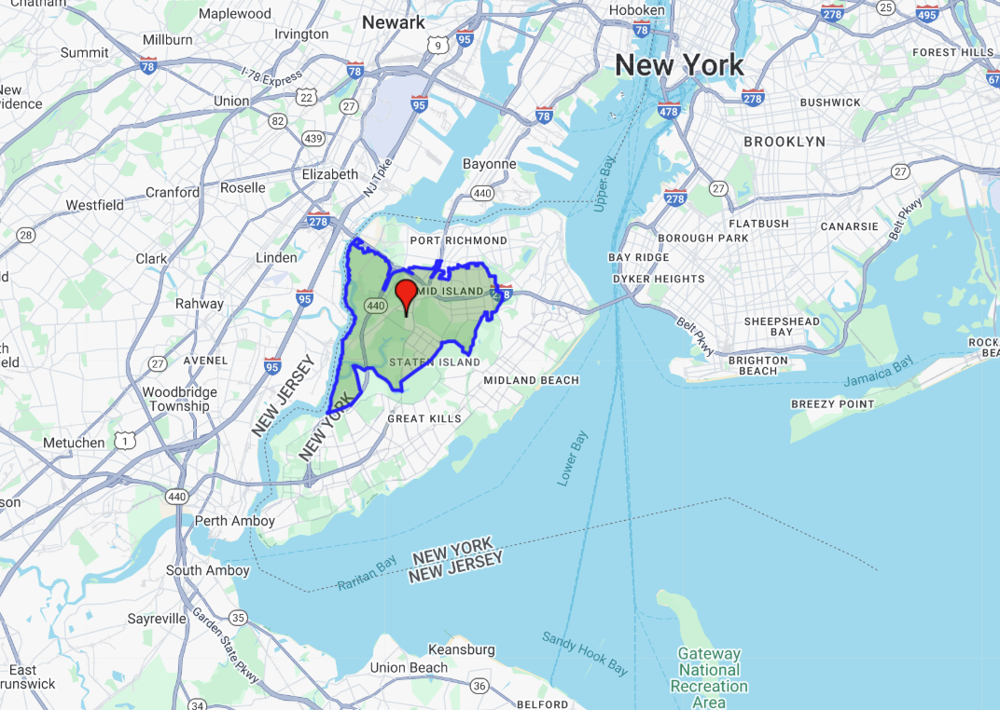

6.1 Handling Spatial Data with GeoPandas and gmplot
The following section was written by Thomas Schittina, a senior majoring in statistics and minoring in mathematics at the University of Connecticut.
This section focuses on how to manipulate and visualize spatial data in Python, with a particular focus on the packages GeoPandas and gmplot. We’ll start with GeoPandas and do the following:
Cover the core concepts and functionalities
Walkthrough an example using NYC shape data
For gmplot we will:
Talk about why you’ll need a Google Maps API key
See some of the different plotting functionalities
Walkthrough an example using NYC shape data
6.1.1 GeoPandas
6.1.1.1 Introducing GeoPandas
Founded in 2013, GeoPandas is an open-source extension of Pandas that adds support for geospatial data. GeoPandas is built around the GeoSeries and GeoDataFrame objects. Both are subclasses of the corresponding Pandas objects, so they should feel familiar to those who have used Pandas before.
6.1.1.2 A Remark about Shapely
The package Shapely is a core dependency of GeoPandas that handles geometric operations. Each geometry (point, polygon, etc.) stored in a GeoDataFrame is a Shapely object, and GeoPandas internally calls Shapely methods to perform spatial analysis. You won’t often need to interact directly with Shapely when using GeoPandas. Still, you may want to familiarize yourself with its basic concepts.
Similar to Series, but should exclusively contain geometries
GeoSeries.crs stores the Coordinate Reference System information
GeoDataFrame:
May consist of both Series and GeoSeries
May contain several GeoSeries, but only one active geometry column
Geometric operations will only apply to the active column
Accessed and manipulated with GeoDataFrame.geometry
Otherwise similar to a normal DataFrame
6.1.2 Example with NYC MODZCTA Shapefile
Given a file containing geospatial data, geopandas.read_file() will detect the filetype and create a GeoDataFrame.
import geopandas as gpdimport os# get .shp from MODZCTA_Shapefile foldershapefile_path =Noneforfilein os.listdir('MODZCTA_Shapefile'):iffile.endswith(".shp"): shapefile_path = os.path.join('MODZCTA_Shapefile', file)break# Use the first .shp file found# read in datagdf = gpd.read_file(shapefile_path)gdf.drop(columns=['label', 'zcta'], inplace=True)gdf.head()
modzcta
pop_est
geometry
0
10001
23072.0
POLYGON ((-73.98774 40.74407, -73.98819 40.743...
1
10002
74993.0
POLYGON ((-73.9975 40.71407, -73.99709 40.7146...
2
10003
54682.0
POLYGON ((-73.98864 40.72293, -73.98876 40.722...
3
10026
39363.0
MULTIPOLYGON (((-73.96201 40.80551, -73.96007 ...
4
10004
3028.0
MULTIPOLYGON (((-74.00827 40.70772, -74.00937 ...
It’s very important to know which CRS your geospatial data is in. Operations involving distance or area require a projected CRS (using feet, meters, etc.). If a geographic CRS is used (degrees), the calculations will likely be wrong.
print(gdf.crs)# convert to projected CRSgdf = gdf.to_crs(epsg=3857)print(gdf.crs)
EPSG:4326
EPSG:3857
Originally, the geometries were in EPSG 4326, which is measured by latitude and longitude. In order to work with the shape data, the CRS was converted to EPSG 3857, which uses meters.
Now we can start working with the spatial data. First, let’s compute the area of each zip code and store it as a new column.
# create column of areasgdf['area'] = gdf.areagdf.head(3)
modzcta
pop_est
geometry
area
0
10001
23072.0
POLYGON ((-8236278.03 4974664.364, -8236327.85...
2.987592e+06
1
10002
74993.0
POLYGON ((-8237364.444 4970258.308, -8237318.6...
3.974361e+06
2
10003
54682.0
POLYGON ((-8236377.258 4971559.548, -8236390.9...
2.611531e+06
Our active geometry column is the shape data for each zip code, so gdf.area() only acts on that column and ignores the others.
Let’s also find the boundary of each zip code, as well as its geographic center.
# create columns for boundary and centorid infogdf['boundary'] = gdf.boundarygdf['centroid'] = gdf.centroidgdf[['modzcta', 'boundary', 'centroid']].head(3)
modzcta
boundary
centroid
0
10001
LINESTRING (-8236278.03 4974664.364, -8236327....
POINT (-8237323.727 4975637.524)
1
10002
LINESTRING (-8237364.444 4970258.308, -8237318...
POINT (-8236103.249 4970509.323)
2
10003
LINESTRING (-8236377.258 4971559.548, -8236390...
POINT (-8236435.551 4972866.281)
Suppose we want to find the distance between two centroids. The current active geometry column is the shape data. Run gdf.geometry = gdf['centroid'] to switch the active geometry.
# switch active geometry to centroid infogdf.geometry = gdf['centroid']
Then we can calculate the distance between the first two centroids with distance().
# find distance between first two centroidsgdf.geometry[0].distance(gdf.geometry[1])
5271.432980923517
6.1.2.1 Plotting with GeoPandas
GeoPandas also includes some basic plotting functionality. Similar to Pandas, plot() will generate visuals using matplotlib.
# plot NYC zip codes with color mapping by areagdf.geometry = gdf['geometry'] # must switch active geometry back firstgdf.plot('area', legend=True)
Interactive maps can also be generated using explore, but you will need to install optional dependencies. An alternative approach is the package gmplot, which we’ll discuss next. First though, here is a list of common GeoPandas methods we’ve not yet covered.
to_file(): save GeoDataFrame to a geospatial file (.shp, .GEOjson, etc.)
length(): calculate the length of a geometry, useful for linestrings
instersects(): check if one geometry intersects with another
contains(): check if one geometry contains another
buffer(): create a buffer of specified size around a geometry
equals(): check if the CRS of two objects is the same
is_valid(): check for invalid geometries
6.1.3 gmplot
6.1.3.1 Google Maps API
An API key is not necessary to create visuals with gmplot, but it is highly recommended. Without a key, any generated output will be dimmed and have a watermark.
Example with no API key
The process to create an API key is very simple. Go here and click on Get Started. It requires some credit card information, but you start on a free trial with $300 of credit. You will not be charged unless you select activate full account.
There are some configuration options you can set for your key. Google has many different APIs, but gmplot only requires the Maps Javascript API.
6.1.3.2 Creating Plots with gmplot
gmplot is designed to mimic matplotlib, so the syntax should feel similar. The class GoogleMapPlotter provides the core functionality of the package.
import gmplotapikey =open('gmapKey.txt').read().strip() # read in API key# plot map centered at NYC with zoom = 11gmap = gmplot.GoogleMapPlotter(40.5665, -74.1697, 11, apikey=apikey)
Note: To render the classnotes on your computer, you will need to create the text file gmapKey.txt and store your Google Maps API key there.
The arguments include:
The latitude and longitude of NYC
The level of zoom
API key (even if it’s not used directly)
more optional arguments for further customization
6.1.4 Making Maps with NYC Zip Code Data
Let’s display the largest zip code by area in NYC.
gdf = gdf.to_crs(epsg=4326) # convert CRS to plot by latitude and longitudelargest_zip = gdf['geometry'][gdf['area'].idxmax()] # returns Shapely POLYGONcoords =list(largest_zip.exterior.coords) # unpack boundary coordinateslats = [lat for lon, lat in coords]lons = [lon for lon, lat in coords]# plot shape of zip codegmap.polygon(lats, lons, face_color='green', edge_color='blue', edge_width=3)# gmap.draw('largest_zip.html')
After creating the plot, gmap.draw('filename') saves it as an HTML file in the current working directory, unless another location is specified. In the classnotes, all outputs will be shown as a PNG image.
Largest NYC Zip Code by area
Let’s also plot the centriod of this zip code, and include a link to gmplot’s documentation (in the classnotes this link won’t work because the PNG is used).
gdf.geometry = gdf['centroid'] # now working with new geometry columngdf = gdf.to_crs(epsg=4326) # convert CRS to plot by latitude and longitudecentroid = gdf['centroid'][gdf['area'].idxmax()] # returns Shapely POINT# plot the point with info windowgmap.marker(centroid.y, centroid.x, title='Center of Zip Code', info_window="<a href='https://github.com/gmplot/gmplot/wiki'>gmplot docs</a>")# plot the polygongmap.polygon(lats, lons, face_color='green', edge_color='blue', edge_width=3)# gmap.draw('zip_w_marker.html')
Here’s the output:

Center of largest NYC Zip Code
6.1.4.1 Other Features of gmplot
directions(): draw directions from one point to another
scatter(): plot a collection of points
heatmap(): plot a heatmap
enable_marker_dropping(): click on map to create/remove markers
from_geocode(): use name of location instead of coordinates
see docs for more
You can also change the map type when you create an instance of GoogleMapPlotter.
Geopandas is a powerful tool for handling spatial data and operations. It builds on regular Pandas by introducing two new data structures, the GeoSeries and GeoDataFrame. Under the hood, Shapely handles geometric operations.
The package gmplot is a simple yet dynamic tool that overlays spatial data onto interactive Google maps. It does so through the class GoogleMapPlotter, which offers an alternative to Geopandas’ built in graphing methods for simple plots.